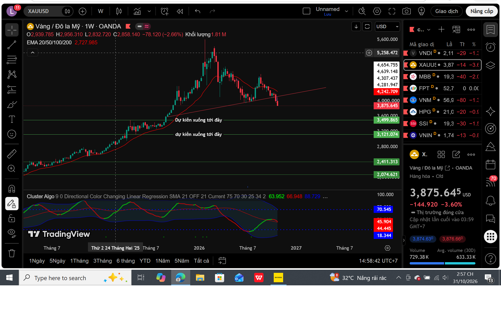
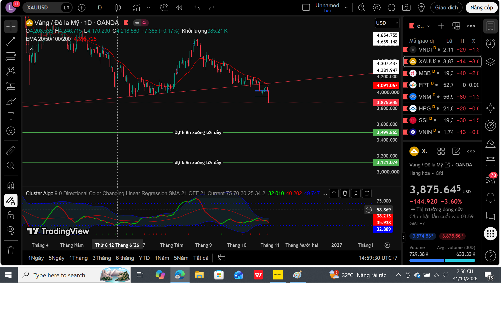
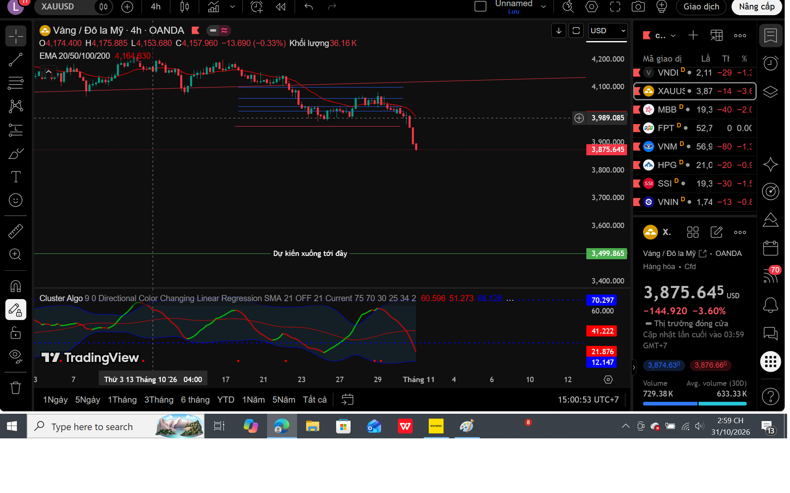
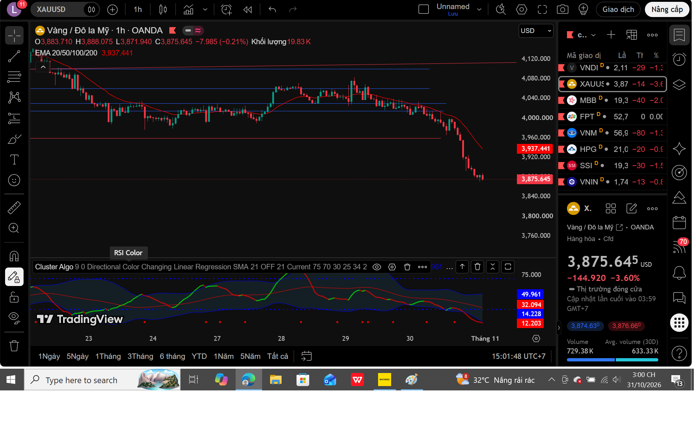

Tóm tắt quan điểm
Vàng kết thúc tuần 26–30/10 trong trạng thái giảm mạnh. Giá cuối biểu đồ OANDA do chúng tôi ghi nhận là khoảng 3.875,645 USD/oz. Cấu trúc D1/H4 tiếp tục nghiêng về bên bán, nhưng giá đã giảm khá xa nên không chọn SELL đuổi.
Kế hoạch cá nhân tuần 02–06/11: Chờ giá hồi về EMA20 khung H1. Nếu giá không vượt được đường này và có tín hiệu từ chối rõ ràng, xuống M15/M5 tìm SELL theo Price Action. Nếu giá phá lên, giữ được trên EMA20 H1 thì ngừng tìm SELL theo kịch bản cũ, đánh giá lại cấu trúc; chưa mặc định BUY ngay.
1. Nhìn lại tuần 26–30/10/2026
Tuần trước, chúng tôi ưu tiên kịch bản giảm, không BUY bắt đáy và chỉ xem xét SELL sau nhịp hồi có xác nhận. Trong tuần vừa qua, GOLD hồi đầu tuần rồi quay đầu giảm sâu, xuyên thủng vùng 3.960 đã được theo dõi. Diễn biến này phù hợp về hướng với kịch bản trước, nhưng không đồng nghĩa đã xuất hiện điểm vào lệnh hợp lệ hay bất kỳ kết quả lợi nhuận nào.
Phiên thứ Sáu 30/10, vàng giao ngay giảm mạnh; các nguồn báo chí ghi nhận mức giảm khoảng 3,5%. Áp lực bán diễn ra trong bối cảnh thị trường tài sản rộng hơn chịu biến động, trong khi nhu cầu thanh khoản và vị thế ký quỹ có thể góp phần khuếch đại đà giảm.
2. W1 – Khung tuần

Khung tuần cho thấy nhịp điều chỉnh lớn sau giai đoạn tăng. Giá đã xuyên xuống vùng đường xu hướng tăng được đánh dấu; cần theo dõi giá đóng cửa và các nhịp hồi trong những tuần tới để đánh giá tính bền vững của sự phá vỡ.
Các mức quanh 3.500 và 3.121 USD/oz là những vùng quan sát xa trên biểu đồ, không phải dự báo chắc chắn và không phải mục tiêu cho riêng tuần tới.
3. D1 – Khung ngày

Khung ngày cho thấy bên bán kiểm soát rõ hơn khi giá tiếp tục ở dưới vùng hỗ trợ tăng đã mất, với một phiên giảm mạnh cuối tuần. Tuy nhiên, một nhịp giảm mạnh cũng làm tăng khả năng xuất hiện hồi kỹ thuật. Do đó không dùng riêng cây nến D1 giảm để mở SELL ngay ở đáy.
4. H4 – Khung 4 giờ

Cấu trúc H4 vẫn thiên về giảm: các nhịp hồi không duy trì được và những vùng hỗ trợ ngắn hạn bị phá. Khi hồi lên, cần quan sát các khu vực 3.935–3.960 và 3.990–4.020 USD/oz như vùng tham chiếu. Các vùng này không thay thế cho điều kiện xác nhận trên biểu đồ thực tế.
5. H1 – Khung quyết định kế hoạch

H1 là khung chúng tôi ưu tiên quan sát khi thị trường mở cửa. Đường EMA20 H1 đang nằm phía trên giá theo ảnh chụp và sẽ thay đổi khi có nến mới. Đây là vùng tham chiếu động, không phải mốc giá cố định.
6. Kế hoạch giao dịch tuần 02–06/11
Kịch bản A – Chờ SELL có xác nhận
- Giá hồi về hoặc tiếp cận EMA20 trên H1.
- H1 không vượt được và xuất hiện phản ứng giảm đáng tin cậy; ưu tiên trường hợp vẫn duy trì Lower High.
- Xuống M15/M5 chờ Breakout → Retest → xác nhận giảm.
- Chỉ cân nhắc giao dịch khi xác định được SL phía trên cấu trúc hợp lý, điểm vô hiệu hóa và tỷ lệ lợi nhuận/rủi ro chấp nhận được. Không đặt lệnh chỉ vì chạm EMA.
Kịch bản B – Dừng SELL, đánh giá lại
Nếu giá phá lên và giữ được phía trên EMA20 H1, đặc biệt có Higher High/Higher Low, tạm dừng tìm SELL theo kế hoạch cũ. Chờ phân tích lại H1/H4; đó có thể vẫn chỉ là hồi kỹ thuật, không tự động chuyển thành BUY.
Kịch bản C – Đứng ngoài
Nếu giá giảm thẳng không hồi, tín hiệu mâu thuẫn hoặc có tin mạnh sắp công bố, ưu tiên giữ vốn và đứng ngoài.
7. Tin tức và rủi ro cần theo dõi
Tuần trước: Ngày 28/10, Fed giữ nguyên biên độ lãi suất 3,75–4,00% và tiếp tục đánh giá lạm phát còn cao. Đây là một yếu tố có thể ảnh hưởng kỳ vọng lãi suất và vàng; không nên quy toàn bộ biến động GOLD cho một tin duy nhất.
Tuần tới: Dữ liệu ISM sản xuất (02/11), JOLTS (03/11), ADP và ISM dịch vụ (04/11) có thể gây biến động. Đáng chú ý nhất là báo cáo việc làm Mỹ – Nonfarm Payrolls lúc 20:30 thứ Sáu, 06/11, theo giờ Việt Nam. Trước các tin mạnh, người giao dịch cần chủ động kiểm soát rủi ro, tránh mở vị thế chỉ dựa trên suy đoán kết quả tin.
Giờ mở cửa: Với GOLD trên OANDA, dự kiến khoảng 06:05 sáng thứ Hai 02/11 theo giờ Việt Nam, nhưng giờ giao dịch thực tế tùy nhà môi giới và thay đổi DST. Kiểm tra trực tiếp lịch XAUUSD của sàn đang dùng trước khi vào lệnh.
| Ngày | Tin | Giờ Việt Nam |
|---|---|---|
| 02/11 | ISM Manufacturing | 22:00 |
| 03/11 | JOLTS | 22:00 |
| 04/11 | ADP Employment | 20:15 |
| 04/11 | ISM Services | 22:00 |
| 06/11 | Nonfarm Payrolls và thất nghiệp | 20:30 |
Giờ Mỹ chuyển sang giờ tiêu chuẩn ngày 01/11; lịch tin tính theo giờ Việt Nam (UTC+7). Cần kiểm tra lại nếu cơ quan phát hành điều chỉnh lịch.
8. Kết luận – BUY, SELL hay ĐỨNG NGOÀI?
EMA20 H1 từ chối giá + M15/M5 xác nhận → mới nghiên cứu SELL.
Giá phá lên và giữ trên EMA20 H1 → dừng SELL, đánh giá lại.
KHÔNG CÓ TÍN HIỆU – KHÔNG GIAO DỊCH!
Đó là kế hoạch cá nhân của tôi cho tuần 02–06/11/2026. Tôi không cố dự đoán chính xác đỉnh đáy, mà kiên nhẫn chờ thị trường xác nhận. Khi dữ liệu thay đổi, kế hoạch cũng phải được cập nhật.